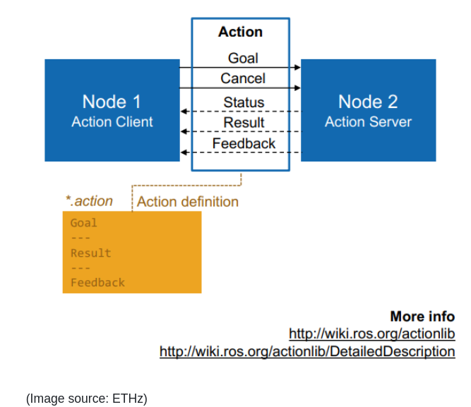
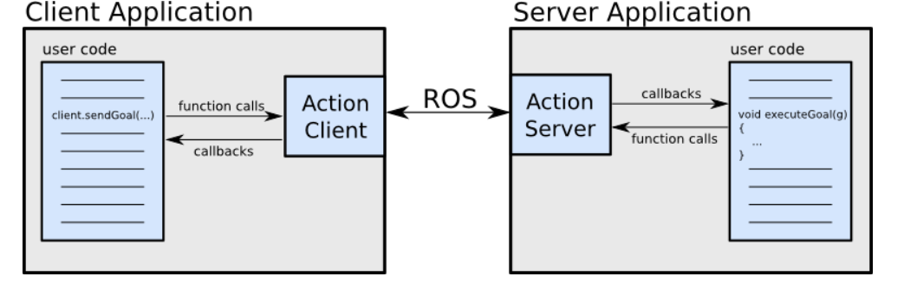
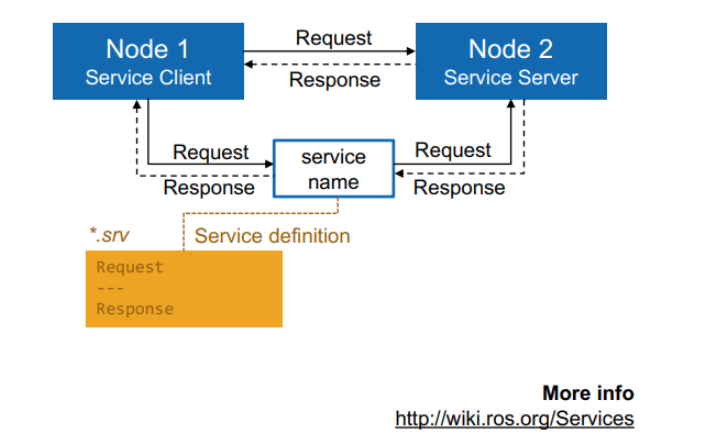

通信机制
concepts
- ROS中四种通信机制:
- message消息广播机制(单工)
- service服务器-客户端(请求-响应)机制(双工，同步)
- action服务(请求-响应-回调)机制(双工，异步)
- 参数服务器(适用用变动不频繁的参数)
comunication
message
message类似广播模式(发布-订阅), 也是一种解耦的设计模式(fascad)
- 需要线定义msg格式 c++中基本使用
#include <ros/ros.h>
ros::NodeHandle nh("~"); #声明ros资源并指定作用域
auto sub = nh.subscribe<MessageType>("topic_name", 10, std::bind(&call_back, this, _1)); //类中使用
auto sub = nh.subscribe("topic_name", 1, <callback_func>, this); // 类中使用
auto pub = nh.advertise<MessageType>("topic_name", 1);
python中基本使用:
#!/usr/bin/env python
import rospy
# import you message header here
sub = rospy.Subscriber("topic_name", <MessgeType>, <call_back_function>, queue_size=1)
pub = rospy.Publisher("topic_name", <MessageType>, queue_size=1)action

action为两个节点之间的直接双向异步通信。 action主要用在需要异步执行某些操作的时候（不需要阻塞等待），进行的通信机制。client也可以取消任务。
action的通信协议定义在.action文件中, 由goal, feedback, results构成。格式如下:#goal definition
int32 order
---
#result definition
int32[] sequence
---
#feedback
int32[] sequence基本使用
- C++中基本使用:
- server
#include <chores/DoDishesAction.h> // Note: "Action" is appended
#include <actionlib/server/simple_action_server.h>
typedef actionlib::SimpleActionServer<chores::DoDishesAction> Server;
void execute(const chores::DoDishesGoalConstPtr& goal, Server* as) // Note: "Action" is not appended to DoDishes here
{
// Do lots of awesome groundbreaking robot stuff here
as->setSucceeded();
# as->setAborted()
}
int main(int argc, char** argv)
{
ros::init(argc, argv, "do_dishes_server");
ros::NodeHandle n;
Server server(n, "do_dishes", boost::bind(&execute, _1, &server), false);
server.start();
ros::spin();
return 0;
}- client
#include <chores/DoDishesAction.h> // Note: "Action" is appended
#include <actionlib/client/simple_action_client.h>
typedef actionlib::SimpleActionClient<chores::DoDishesAction> Client;
void GoHomeAction::doneCB(const actionlib::SimpleClientGoalState& state,
const auto_docking::DockingResultConstPtr& result) {
if(state == actionlib::SimpleClientGoalState::SUCCEEDED) {
switchWorkMode(GoHomeState::Success);
LOG(INFO) << "go docker success: " << result->success;
if(!result->success) {
LOG(WARNING) << "something wrong with action result, you should notice this.. ";
}
} else {
switchWorkMode(GoHomeState::Failed);
LOG(INFO) << "go docker failed or aborted" << result->success;
}
}
int main(int argc, char** argv)
{
ros::init(argc, argv, "do_dishes_client");
Client client("do_dishes", true); // true -> don't need ros::spin()
client.waitForServer();
chores::DoDishesGoal goal;
// Fill in goal here
client.sendGoal(goal, doneCB);
# client.sendGoal(goal, boost::bind(&class_call_back, this, _1, _2))
bool finished_before_timeout = client.waitForResult(ros::Duration(5.0));
if (client.getState() == actionlib::SimpleClientGoalState::SUCCEEDED)
printf("Yay! The dishes are now clean");
printf("Current State: %s\n", client.getState().toString().c_str());
return 0;
}- server
#include <chores/DoDishesAction.h> // Note: "Action" is appended
#include <actionlib/server/simple_action_server.h>
typedef actionlib::SimpleActionServer<chores::DoDishesAction> Server;
void execute(const chores::DoDishesGoalConstPtr& goal, Server* as) // Note: "Action" is not appended to DoDishes here
{
// check abort or new goal
// Do lots of awesome groundbreaking robot stuff here
as->setSucceeded();
# as->setAborted()
}
int main(int argc, char** argv)
{
ros::init(argc, argv, "do_dishes_server");
ros::NodeHandle n;
Server server(n, "do_dishes", boost::bind(&execute, _1, &server), false);
server.start();
ros::spin();
return 0;
}- python中基本使用:
- server
#! /usr/bin/env python
import roslib
roslib.load_manifest('my_pkg_name')
import rospy
import actionlib
from chores.msg import DoDishesAction
class DoDishesServer:
def __init__(self):
self.server = actionlib.SimpleActionServer('do_dishes', DoDishesAction, self.execute, False)
self.server.start()
def execute(self, goal):
if self._as.is_preempt_requested():
rospy.loginfo('%s: Preempted' % self._action_name)
self._as.set_preempted()
success = False
# Do lots of awesome groundbreaking robot stuff here
self.server.set_succeeded()
if __name__ == '__main__':
rospy.init_node('do_dishes_server')
server = DoDishesServer()
rospy.spin()- client
#! /usr/bin/env python
import roslib
roslib.load_manifest('my_pkg_name')
import rospy
import actionlib
from chores.msg import DoDishesAction, DoDishesGoal
if __name__ == '__main__':
rospy.init_node('do_dishes_client')
client = actionlib.SimpleActionClient('do_dishes', DoDishesAction)
client.wait_for_server()
goal = DoDishesGoal()
# Fill in the goal here
client.send_goal(goal)
client.wait_for_result(rospy.Duration.from_sec(5.0))service
Services are just synchronous remote procedure calls; they allow one node to call a function that executes in another nodwe A ROS service is a special kind of topic that allows for two-way communication between nodes. (Specifically, request-response communication.) 通信可以是一对多，也可以是多对多 service的效果类似函数调用，由于是阻塞的方式， 被调用的服务不应该消耗过多时间

常用方法
// 直接使用
bool setVirtualWallLayer(const common_msgs::VirtualWalls &walls,
const std::string service_name) {
if(!ros::service::exists(service_name, true)) {
bool ret = ros::service::waitForService(service_name, ros::Duration(10));
if (!ret) {
LOG(WARNING) << service_name << " call service waiting too much time!";
return false;
}
}
common_srvs::UpdateVirtualWall virtualWallSrv;
virtualWallSrv.request.walls = walls;
ros::service::call(service_name, virtualWallSrv);
if(!virtualWallSrv.response.success) {
LOG(WARNING) << service_name << " update virtual walls by service error!";
}
return virtualWallSrv.response.success;
}
// 通过句柄使用效率工具
`dynamic_reconfigure’
可以很方便的调参， 但是参数不要过多。
使用
- 创建
cfg文件
#!/usr/bin/env python
PACKAGE = 'active_safety'
from dynamic_reconfigure.parameter_generator_catkin import *
gen = ParameterGenerator()
gen.add("enable_update_by_dynamic_config", bool_t, 0, "a switch for tune config", False)
gen.add("lateral_inflation_meter", double_t, 0, "in robot coordinate", 0.1, 0, 1.0)
gen.add("virtical_inflation_meter", double_t, 0, "in robot coordinate", 0.3, 0, 1.0)
exit(gen.generate(PACKAGE, "active_safety_node", "ActiveSafety")) # ActiveSafety, 生成的配置类名及.h文件名为TuotrialConfig这个cfg文件名字便决定了catkin_install时要找的.h名字， 换言之，cfg的名字应与exit的最后一个参数相同, 这个文件需要a+x权限(因为是python脚本)
find_package(catkin REQUIRED
COMPONENTS
dynamic_reconfigure
...
)
generate_dynamic_reconfigure_options(
cfg/ActiveSafety.cfg
)
# make sure configure headers are built before any node using them
add_dependencies(example_node ${PROJECT_NAME}_gencfg)- package添加依赖
<build_depend>dynamic_reconfigure</build_depend>
<exec_depend>dynamic_reconfigure</exec_depend>- cpp使用更新
// 更新
void ActiveSafetyNode::reconfigureCB(ActiveSafetyConfig &config, uint32_t level) {
const bool enabled = config.enable_update_by_dynamic_config;
if(enabled) {
Vector2d amplify_meter(config.virtical_inflation_meter,
config.lateral_inflation_meter);
active_safety_ptr_->set_amplify(amplify_meter);
}
}
// 绑定回调
dynamic_reconfigure::Server<ActiveSafetyConfig>::CallbackType f;
f = boost::bind(&ActiveSafetyNode::reconfigureCB, this, _1, _2);
dynamic_params_server_.setCallback(f);常见问题
ros spin
- 写脚本的时候遇到一个问题，在while循环中调用了rospy.spin导致while内的语句只能被执行一次: 出现这个问题的原因是执行spin后ros中线程管理会只处理callback的线程， 而主线程则只检测rospy是否被关闭了。